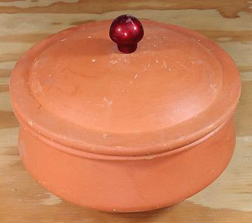
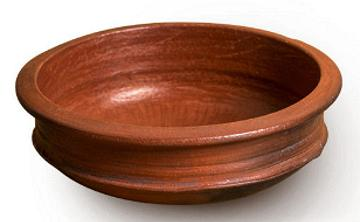

Clay Pots

Handi
This is a popular clay pot in India, made in various sizes and with
some variation in shape. The photo example is 8-1/2 inches (22 cm) diameter
and holds 9 cups (2 litre). Handis may come with or without lids.
They should be seasoned before use - see below.
Small versions, always with lids, are called "Curd Pots" (Yogurt Pots).
More on South Asian Kitchen Gear

Chatti
This is a clay pot of Kerala, in the far southwest of India. Shown is the
most classic form, which has also been made in cast bronze. It may or may not
include a lid. Simpler shaped chattis are also common. This clay pot is most
famous for Keralla Fish Curry, but is also used in other ways. It should be
seasoned before use, see below.
Photo copyright uncertain, used by multiple sellers.
Cautions
- These pots are intended for oven or open flame. If used on an electric
stove a heat defuser must be used on the burner.
- Use moderate to low heat for all cooking.
- Avoid sudden changes of temperature. Never set a hot pot on a cold
surface. It can be set on a folded towel, or on wood.
- Never put the pot in a preheated oven. place in a cold oven so it
can come up to temperature gradually.
- Do not use soap or detergent to clean, it can get into pores and
taint food.
Seasoning Indian Clay Pots
- Soak in water 8 hrs or overnight.
- Wipe clean with a scouring sponge.
- Set in the Sun until completely dry.
- Rub all over generously with oil.
- Set in the sun for a full day. The oil will soak in.
- Fill with rice water and let sit overnight. Some say three days with a
change of rice water every day. Rice water is from the first washing of
white rice, and should be quite hazy.
- Over moderate heat bring rice water to a boil. Let cool completely.
- Clean well with a damp sponge - no soap or detergent - they can get into
the pores and harm food flavors.
- Place some oil in it, and some onion slices. Bring up to frying
temperature over very moderate flame, fry the onions until well translucent.
It is now ready for use.
Hairline Cracks
- Some say to re-season, but instead of rice water use water with a cup of
cooked rice.
- Über expert Paula Wolfert says she has had great success filling
a clay pot with milk and bringing it to a simmer for awhile.
kp_handi 220315 ©Andrew Grygus - agryg@aaxnet.com
- Linking to and non-commercial use of this page permitted
All images not otherwise attributed are ©
cg1.